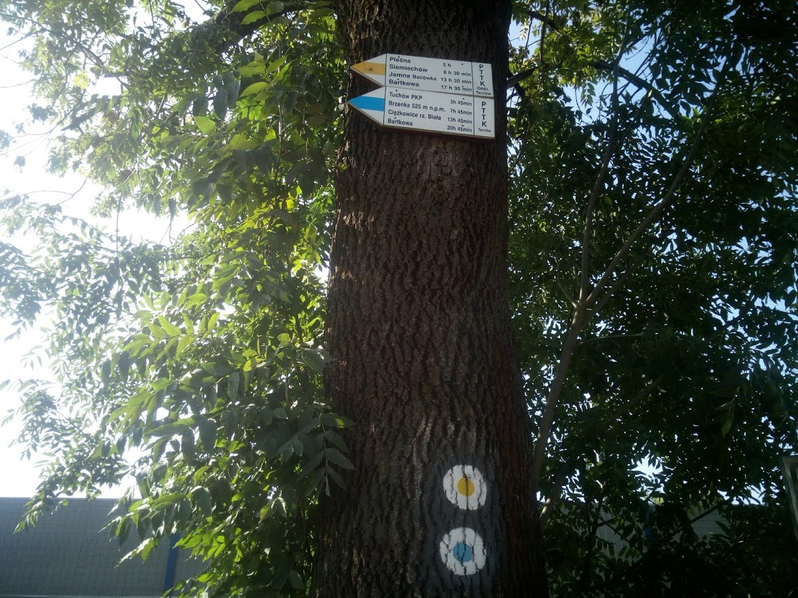

Kliknij na zdjęcie, aby powiększyć:

Cafe Tramwaj
Znajdująca się na ul. Krakowskiej kawiarnia jest urządzona w replice przedwojennego tramwaju (tzw. Biedronce). Tutejsze tramwaje jeździły w latach 1911-1942. Wierna replika została wykonana ręcznie w ciągu trzech lat. Warto wypić tu kawę przed wyruszeniem na szlak.
Początek szlaku
Kropka rozpoczynająca szlak znajduje się na drzewie przy ul. Tuchowskiej, koło południowej bramy starego cmentarza. Od tego miejsca idziemy w lewo.
Krajobraz Pogórzy
Przez pierwsze kilkadziesiąt kilometrów szlaku wędrować będziemy od wsi do wsi po bocznych asfaltowych lub szutrowych drogach. Czasem zejdziemy na leśne ścieżki, ale przez większość czasu iść będziemy na otwartej przestrzeni. Kilometry rozgrzanego asfaltu wynagrodzą nam piękne widoki na pofalowane wzgórza i pierwsze widoki gór na horyzoncie.
Sanktuarium w Tuchowie
Murowana bazylika z kompleksem klasztornym o.o. redemptorystów z sanktuarium maryjnym. Powstała na miejscu dawnego kościoła z XI w., nowa świątynia wybudowana między 1665-1682 rokiem. Jest ważnym ośrodkiem pielgrzymkowym. Wierni przychodzą do otoczonego czcią obrazu Matki Bożej z XVI w. Renesansowy obraz został namalowany w warsztacie Mistrza z Bodzentyna.
Bacówka na Brzance
Prywatne schronisko turystyczne, położone na wysokości 508 m n.p.m., ok. 500 m od szlaku niebieskiego w masywie Brzanki. Otwarty w 1981 roku obiekt mieści 28 miejsc noclegowych. Obok znajduje się niewielka wieża widokowa, jednak przez rosnące wokół drzewo, oferuje ograniczone widoki.
Brzanka
Szczyt Brzanki (534 m n.p.m.) jest jednym z najwyższych szczytów Pogórza Ciężkowickiego. Razem z jego najwyższym szczytem, Liwoczem (562 m n.p.m.) stanowi długi garb, widoczny z wielu odległych szczytów (np. gorczańskiego Lubania). Sam szczyt nie oferuje widoków – jest pokryty gęstym lasem, mieszanką buka i jodły.Szczyt Brzanki (534 m n.p.m.) jest jednym z najwyższych szczytów Pogórza Ciężkowickiego. Razem z jego najwyższym szczytem, Liwoczem (562 m n.p.m.) stanowi długi garb, widoczny z wielu odległych szczytów (np. gorczańskiego Lubania). Sam szczyt nie oferuje widoków – jest pokryty gęstym lasem, mieszanką buka i jodły.
Skamieniałe Miasto
Na stokach góry Skała (367 m n.p.m.), las ukrywa malownicze ostańce skalne z piaskowca ciężkowickiego. Fantazyjne kształty od lat pobudzały wyobraźnie. Mijamy żółtoszare skały o obrazowych nazwach takich jak Baszta Paderewskiego, Cyganka, Borsuk, Orzeł oraz Warownie Górna i Dolna. Teren został objęty rezerwatem w 1974 roku.
Skała Grunwald
W 1910 r. dla upamiętnienia 500. Rocznicy bitwy pod Grunwaldem, nadano tę nazwę potężnej skale, znajdującej się przy wejściu do dzisiejszego rezerwatu. Sześciu mieszkańców miasteczka, pod dowództwem Zygmunta z Bobowej, brało udział w starciach z Krzyżakami. W ramach obchodów wmurowano w skałę pamiątkową tablicę, ufundowaną przez Ignacego Jana Paderewskiego.
Wieża na Bruśniku
Wybudowana na wzniesieniu Styrki (420 m n.p.m.) drewniana wieża widokowa jest jedną z najpiękniejszych atrakcji regionu. Z położnej 18 m nad ziemią platformy widokowej rozpościera się widok na wszystkie strony świata. Na barierkach umieszczone są podpisane panoramy. U stóp wieży znajduje się wiata z miejscem na ognisko. Pod samą wieżę można podjechać samochodem.
Jezioro Rożnowskie
Sztuczne jezioro zaporowe, utworzone w latach 1935-1941 poprzez spiętrzenie wód Dunajca zaporą w Rożnowie. Ma nieregularny kształt przypominający literę "S", 16 km długości i maksymalnie do 35 m głębokości. Pełni funkcje rekreacyjne, energetyczne i przeciwpowodziowe. Po jeziorze odbywają się rejsy statkiem wycieczkowym, kursującym z Gródka. Można również uprawiać turystykę wodną na własną rękę - funkcjonuje wiele wypożyczalni sprzętu i jachtkluby. W północnej części jeziora znajduje się charakterystyczna wyspa Grodzisko (zwana również jako Małpia Wyspa). To rezerwat ścisły, ostoja dla ptactwa wodnego.
Pasmo Łososińskie
Pasmo Łososińskie to długie na ponad 20 km pasmo w Beskidzie Wyspowym, osiągające wysokość ponad 900 m n.p.m. Rozdziela dolinę Łososiny na północy oraz doliny Sowlinki, Mordarki i Smolnika na południu. Większość grzbietu pokrywają gęste lasy, ale poprzetykane są polankami z widokami na okoliczne góry. Najwyższy szczyt to Jaworz (921 m n.p.m.). Pod szczytem, na polanie znajduje się niewielka wieża widokowa (widok z niej na zdjęciu powyżej).
Limanowa
Miasto położona nad potokiem Sowlina, u stóp Pasma Łososińskiego, 25 km na zachód od Nowego Sącza. Założone w XIV lub XV w. Pod zaborem austriackim przeżyła ożywienie gospodarcze, zwłaszcza w latach 80. XIX w. gdy wybudowano przebiegającą przez miasto kolej transwersalną. W czasie I WŚ toczono tu ciężkie walki (m. In. Operacja limanowsko-łapanowska). Po wojnie miasto nieco podupadło. Rozwój gospodarczy miasta przypada na lata 60. XX w. Przez miasto przebiega droga krajowa nr 28. Liczba mieszkańców: ok. 14 700.
Cmentarz na Jabłońcu
W trakcie I Wojny Światowej, na terenie Beskidów toczyły się bardzo ciężkie walki. Austriacy podjęli się próby inwentaryzacji i pochówku ciał poległych żołnierzy, niezależnie od strony konfliktu. Ambitne przedsięwzięcie poskutkowało wydzieleniem i budową ponad 400 cmentarzy, porozrzucanych na terenie południowo-wschodniej Polski. Jednym z najciekawszych tego typu obiektów jest cmentarz reprezentacyjny nr 368 X okręgu cmentarnego na wzgórzu Jabłoniec koło Limanowej. Pochowani tam są żołnierze rosyjscy i austro-węgierscy, polegli podczas operacji limanowsko-łapanowskiej 7-12 grudnia 1914. Zwycięstwo armii austriackiej, powstrzymało rosyjską ofensywę w kierunku Krakowa. Wzgórze zostało zdobytę 11 grudnia, dzięki węgierskim huzarom pod dowództwem płk. Othmara Muhra, który poległ w walce. Upamiętnia go kamienna kaplica, która była dawniej jego miejscem spoczynku (w międzywojniu przeniesiono jego szczątki do ojczyzny). Sam cmentarz został wybudowany jeszcze w czasie wojny, według projektu wiedeńskiego architekta Gustava Ludwiga. Z terenów cmentarza rozciąga się piękny widok na okoliczne góry.
Pomnik ofiar "Krawej Wigilii"
23 grudnia 1944 roku naziści dokonali pacyfikacji wsi Ochotnica Dolna. Była to akcja odwetowa za atak partyzantów sowieckich na rabujących wieś Niemców, dzień wcześniej. Ofiarami bestialskiego mordu padło 56 osób, w tym 19 dzieci. Wzniesiony w 1964 roku pomnik, projektu Henryka Burzca, przedstawia jedną z ofiar – dwudziestoletnią Marię Kawalec, tulącą do piersi swoje małe dziecko.
Lubań
Najwyższy szczyt pasma Lubania (1211 m n.p.m.), będącego najdłuższą odnogą głównego rozrogu Gorców. Na szczycie znajduje się 22-metrowa wieża widokowa oraz krzyż z cytatem Jana Pawła II. Na polanie pod szczytem znajduje się studencka baza namiotowa, prowadzona przez krakowskie Studenckie Koło Przewodników Górskich. Założona w 1967, jest jedną z najstarszych i najwyżej położoną bazą namiotową w Beskidach (1200 m n.p.m.). posiada 45 miejsc noclegowych w wojskowych namiotach i działa w sezonie wakacyjnym. Można również rozbić własny namiot. Nieco poniżej szczytu znajdują się fundamenty dawnego schroniska (bacówki), która spłonęła doszczętnie w 1978 roku.
Hala Majerz
Należąca do Pienińskiego Parku Narodowego duża hala, na której prowadzony jest wypas kulturowy owiec. Dzięki temu hala nie zarasta lasem i zachowany jest bogaty ekosystem łąkowy. Więcej o tym dowiedzieć się można z wystawy stałej pawilonu PPN w Czorsztynie. Z hali rozpościera się piękny widok na Tatry, Pieniny Spiskie oraz utworzony w 1997 zbiornik zaporowy – J. Czorsztyńskie. Nazwa Majerz pochodzi z języka słowackiego i oznacza folwark (słow. Majer).
Trzy Korony
Trzy Korony to, choć nie najwyższy, to zdecydowanie najsłynniejszy szczyt Pienin. Składa się z kilku turni o nazwach: Okrąglica, Płaska Skała, Nad Ogródki, Pańska Skała oraz Niżnia Ogkrąglica. Na najwyższej Okrąglicy (982 m n.p.m.) znajduje się płatna platforma widokowa (bilet w tym samym dniu ważny również na Sokolicy). Skały porastają cenne przyrodniczo murawy skalne. Gniazduje tu również rzadki gatunek ptaków - pomurnik.
Sokolica
Górująca nad przełomem Dunajca góra (747 m n.p.m.), zbudowana z twardych wapieni rogowcowych. Na szczycie znajduje się płatna platforma widokowa (wstęp płatny, bilet z Trzech Koron ważny w tym samym dniu). Okolice porastają kępy charakterystycznej sosny reliktowej. Jest to karłowata odmiana sosny, która porastała Pieniny podczas ostatniej epoki lodowcowej (która oszczędziła te góry). Jedna z tych sosen, rosnąca nad ponad trzystumetrową przepaścią jest ikoną Pienin. Niestety, ponad pięćsetletnie drzewo zostało uszkodzone podczas akcji ratowniczej we wrześniu 2018 roku.
Dunajec
Jedna z najdłuższych rzek w Karpatach. Tworzy ją kilka mniejszych rzek wypływających z Tatr. Później Biały i Czarny Dunajec łączą się w Dunajec, który następnie płynie przez Beskidy i Pogórza, aby wpaść do Wisły w okolicach Opatowca, po przepłynięciu 247 km. Na terenie Pienin tworzy malowniczy przełom, którym już od XIX w. odbywają się spływy tratwami. To jedna z największych atrakcji regionu.
Przełęcz Rozdziele
Przełęcz Rozdziele w pełni zasłużyła na swoją nazwę. To nie tylko granica Beskidu Sądeckiego i Pienin, ale także Karpat Zewnętrznych i Centralnych. Biegnie tędy również granica Polski i Słowacji. Po polskiej stronie znajdują się źródła Grajcarka, którego dolinę przed II Wojną Światową zamieszkiwali Łemkowie (tu było najdalej na zachód wysunięte skupisko ludności rusińskiej). Schodząc na stronę Słowacką dotrzemy do słynącej z objawień maryjnych wsi Litmanova.
Koniec szlaku
Długo wyczekiwany widok. Po prawie dwustu kilometrach wędrówki, kończy się długodystansowy szlak z Tarnowa. Jesteśmy na przeł. Obrazek, rozdzielającej Mały i Wielki Rogacz. Pozostaje nam tylko zejść do jednej z okolicznych miejscowości i zakończyć naszą przygodę. Przebiega tędy również czerwony Główny Szlak Beskidzki. Najdłuższy szlak w polskich górach. Przebiega on przez Beskid Śląski, Beskid Żywiecki, Gorce, Beskid Sądecki, Beskid Niski i Bieszczady. Długość: ok. 500km